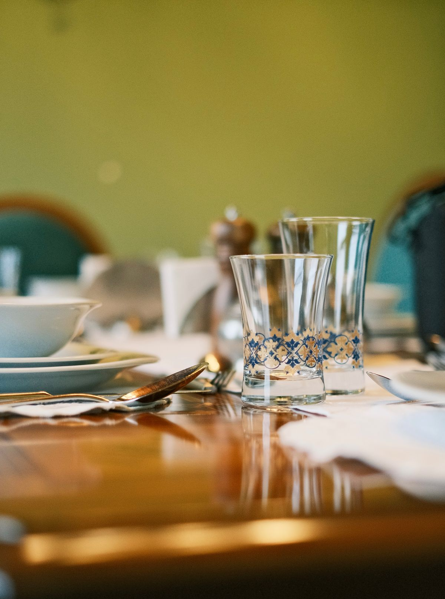

物語を感じる空間
煉瓦やステンドグラスの雰囲気を楽しむ声も。
01 / LUNCH TIME
いろいろな味から選ぶ楽しさを。
おしゃべりをしながら、ゆっくりランチ。
ランチセットの充実ぶりも、口コミで親しまれている理由のひとつ。セットの詳細は、お店への確認後にご案内します。
【要確認：ランチセットの構成と価格・提供時間】
【要確認：セット内容】
CHOOSE YOUR FAVORITE
メインのジャンル例です。提供内容は確認中です。
洋食気分の日に。
温かなひと皿を囲んで。
いつもと少し違う気分で。
しっかり食べたい日に。
【要確認：メニュー名と価格】
ドリンクやデザートと過ごす、ひと息の時間。
【要確認：セットドリンク・デザートの価格】

02 / ABOUT US
上田・住吉にある、多国籍料理と洋食のレストラン。煉瓦やステンドグラス、アンティーク調のしつらえを楽しむ声が、口コミに寄せられています。
幅広い料理を選ぶ時間も、食後に交わす会話も。気取らず過ごせる食事のひとときをイメージしたご案内です。
※空間・サービスの紹介は、ご提供いただいた口コミ傾向に基づきます。
【要確認：お店の成り立ち・本店との関係】
【要確認：店名の読み】
煉瓦やステンドグラスの雰囲気を楽しむ声も。
洋食・アジアン・石焼きなど、多彩なジャンル。
ボックス席や個室を利用するご家族の声も。
04 / YOUR TABLE
扉付きの個室を利用したという口コミも。予約条件は確認中です。
【要確認：個室の数・人数・予約方法・予約期限】
カトラリーなど、お子さま向けの対応はお店へご相談ください。
【要確認：お子様メニュー・キッズ対応】
駐車場の広さに触れる口コミも寄せられています。
【要確認：駐車台数】
ご注文は席のタブレットから。お支払いはPayPayをご利用いただけます。
【要確認：その他のお支払い方法】
05 / ACCESS & HOURS
【要確認：ラストオーダー時刻・ランチ提供時間】
国道144号・住吉中央交差点から少し入った場所です。
【要確認：曲がる場所・目印】
RESERVATION & CONTACT
お席のご相談など、お電話でどうぞ。
0268-75-8828日〜木 11:00〜22:00 ／ 金・土 11:00〜23:00
【要確認：定休日の有無】
このページは提案用デモです。電話リンクは実際のお店につながります。